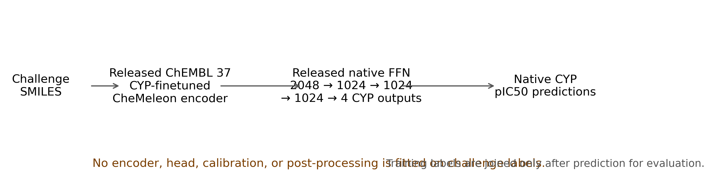
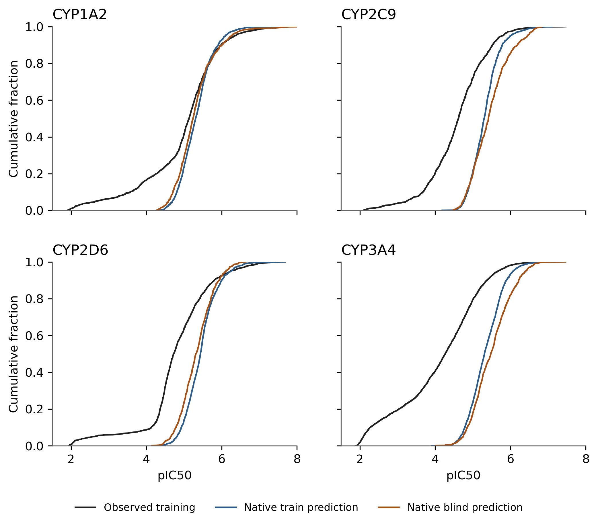
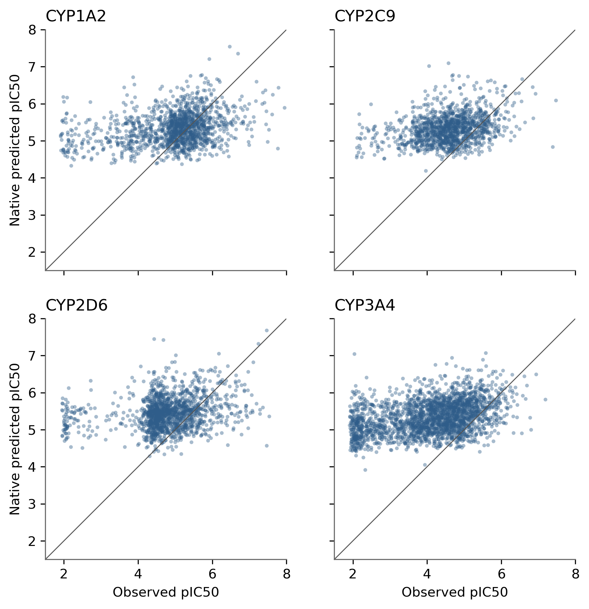

OpenADMET CYP native zero-shot predictions
Purpose: evaluate the released OpenADMET CYP-ChEMBL-finetuned CheMeleon encoder and native prediction head on challenge training and blind SMILES without fitting on challenge labels.
Prediction construction

Training-set metrics
| Endpoint | ST-RAE | MAE | Spearman ρ | n |
|---|---|---|---|---|
| CYP1A2 | 0.6695 | 0.7692 | 0.2827 | 1412 |
| CYP2C9 | 0.8862 | 0.8517 | 0.2841 | 1285 |
| CYP2D6 | 1.0216 | 0.8668 | 0.2200 | 1493 |
| CYP3A4 | 1.0152 | 1.3109 | 0.3656 | 2335 |
Observed and predicted distributions

Observed versus native prediction
